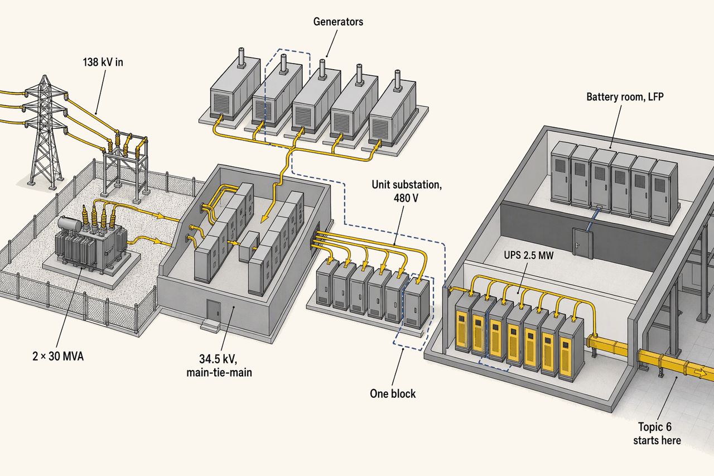
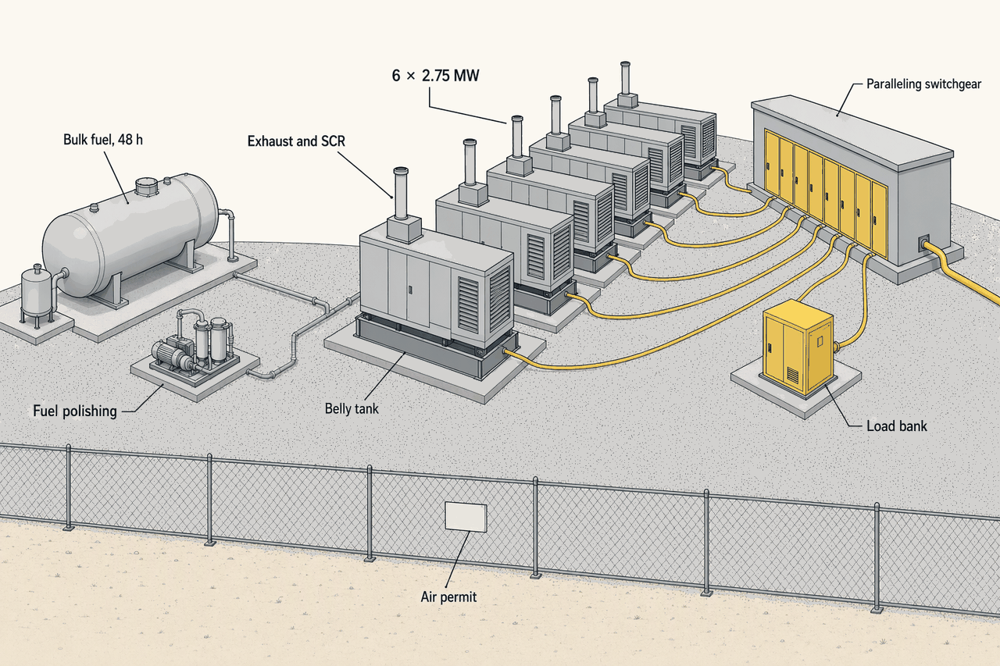
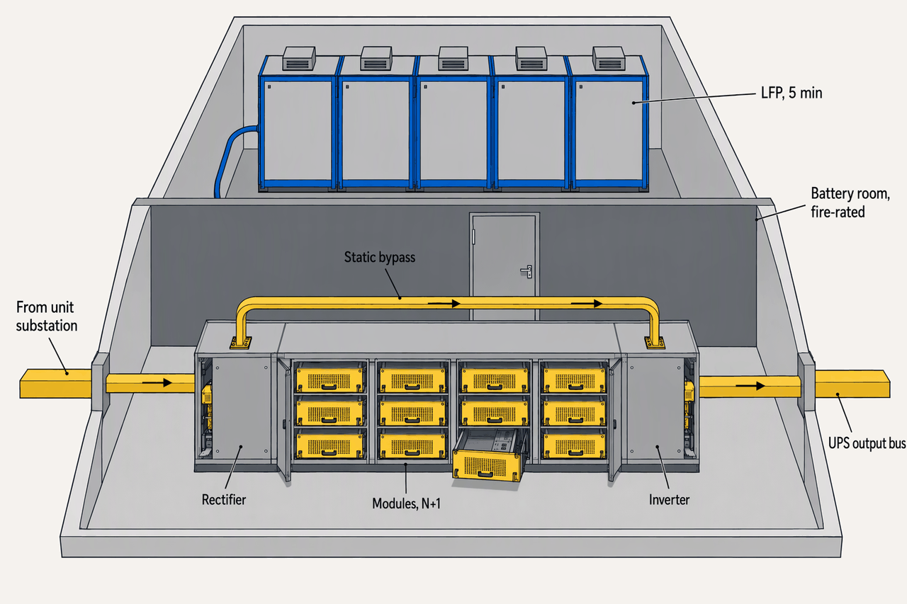
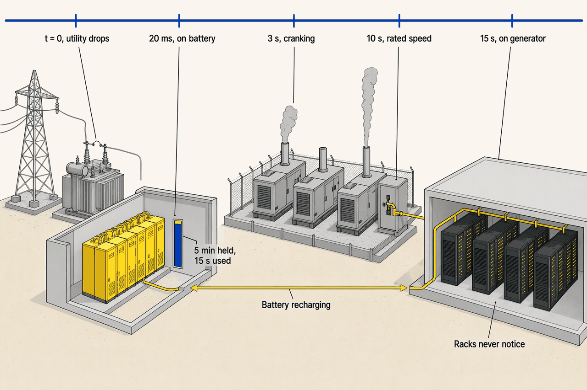

Power Systems I: Utility to UPS
Deep detail and sources: the appendix for this topic. Short version: sixty words.
Topic 3 brought 138 kV to the fence. This chapter follows the power from there to the first bus where it is clean: through transformers and switchgear, past generators waiting for the grid to fail, to the UPS that hides every failure from the load. Each link exists to survive the failure of the one above it, and the unit of design is the block.
- 138 kV in, 34.5 kV across the campusService and campus voltages138 kV because 56 MW sits above the distribution ceiling; 34.5 kV because it moves more power on less copper
- 2 × 30 MVALarge power transformers, 138/34.5 kV, N+1 on day oneThe 128-week item, sized for the campus and not for Hall 1
- 6 × 2.75 MWStandby diesels for 14 MW of hall loadGenerators carry IT × PUE: five needed, one spare
- 6 × 2.5 MWUPS blocks for 10 MW of critical loadFour needed; six installed under Topic 6's 3M2 arrangement
- 5 minutes, ~15 s usedLFP battery per block, and how much a utility loss actually spendsThe rest is margin for a failed generator start
- 48 h against 12 hOn-site fuel at the reference hall, against Uptime's Tier minimumFuel hours buy independence from the resupply truck
The chain
- Utility at 138 kV: two lines, revenue metering, demarcation
- raw grid power, on the utility's terms
- 2 × 30 MVA LPTs, 138/34.5 kV, N+1
- stepped-down MV that survives one transformer
- 34.5 kV main-tie-main switchgear; the generators parallel here
- MV that survives a bus section, and the grid itself once the engines are on
- 8 unit substations, 34.5 kV to 480Y/277 V
- LV that survives one transformer or feeder
- 6 × 2.5 MW UPS blocks, batteries behind a fire wall
- conditioned power that never saw the outage
- UPS output bus, 480Y/277 V
Six links, and each exists to survive the failure of the one above it. Read the arrows, not the boxes: what passes down the chain is not just a lower voltage but a stronger guarantee, and the guarantee at the bottom is that the load never notices anything that happened above (APX-power-1 §1).

The chain is also a walk across the site: oil-filled transformers outdoors in the substation yard, dry-type transformers indoors at the hall wall, lithium behind a wall the fire code put there. The dashed box round one UPS, one genset and one unit substation is the unit of design; every later hall repeats it off the shared 34.5 kV bus and nothing in Phase 1 is ever resized.
Utility and substation
- distribution feeder, 12.47–35 kV0–15 MW
- dedicated customer substation, 69–138 kV15–50 MW
- transmission-fed substation, 138–230 kV50–150 MW
- transmission interconnect, 230–345 kV200–250 MW
- Hall 1 alone14 MW
- the reference campus56 MW
- the explorer's current ceiling for 69–138 kV80 MW
The campus sits on the seam between two bands and 138 kV is the answer in both. But 138 kV does not stretch to 80 MW the way the landing page's explorer says; many 60–80 MW sites now go to 230 kV, and every utility sets its own thresholds. The interconnection study decides, not the table (APX-power-1 §1).
| Arrangement | What it survives | Cost | Tier credit |
|---|---|---|---|
| Two feeders from one substation bus | A feeder fault | low | ✗ |
| Feeders from two substations | Loss of a substation | medium | ✗ |
| Two transmission paths | A transmission contingency | high, rare | ✗ |
Uptime's Tier Standard counts only the engine plant as a reliable source; utility feeds are an economic convenience, however many there are. Buy the second line for uptime economics, not for the Tier. Inside the fence, main-tie-main is what makes the substation concurrently maintainable: open a main, feed both bus halves through the tie, work on the dead side (APX-power-1 §2, APX-power-1 §3).
Bus arrangements, protection and the demarcation
- Bus arrangements in ascending resilience and cost: radial, main-tie-main (double-ended), ring bus, breaker-and-a-half. Tier III's workhorse is main-tie-main: either transformer or bus section comes out with the tie closed and no load dropped.
- Protection: transformer differential (87), overcurrent (50/51), under- and over-voltage (27/59), bus differential and breaker-failure, on microprocessor relays driving vacuum breakers. A selective coordination study makes sure a fault clears at the nearest upstream device only.
- Demarcation: the utility owns the lines, the revenue metering and usually the first high-side device; the owner's design-builder engineers and builds everything downstream. Substation construction runs 2–4 years when the utility's scope is included.
- Campus voltage: 34.5 kV over 13.8 kV because it moves more power with less copper and fewer feeders; 13.8 kV suits smaller sites and shorter runs.
Transformers
Two transformer populations matter: two oil-filled LPTs outdoors at 138/34.5 kV, and eight dry-type unit substations indoors at 34.5 kV to 480Y/277 V. Every rating on the one-line comes from one short sum, and every line of it is a decision (APX-power-1 §4, APX-power-1 §6).
From 10 MW IT to every rating on the Phase 1 one-line
| Step | Arithmetic | Result |
|---|---|---|
| Hall load | 10 MW IT × PUE 1.4 | 14 MW |
| Split | UPS-backed critical / mechanical | 10 / 4 MW |
| Unit substations | 14 ÷ (2.5 MVA × 0.9 pf) = 6.2, plus one | 8 × 2,500 kVA (7 + 1) |
| LPT loading | ~16 MVA drawn with losses and margin | one of 2 × 30 MVA, N+1 |
| Generators | 14 ÷ 2.75 = 5.1 → 5, plus one | 6 × 2.75 MW |
| UPS blocks | 10 ÷ 2.5 = 4 needed; six under Topic 6's 3M2 | 6 × 2.5 MW, 15 MW installed |
| Fault current | 2,500 kVA at 480 V = 3,007 A; ÷ 0.06 Z | ~50 kA; 65 kA breakers |
PUE puts the mechanical load on the generators but not on the UPS, so the two counts come from different loads: 14 MW for the engines, 10 MW for the blocks. Impedance is a trade: lower %Z gives better voltage regulation and a bigger fault current, hence the breaker rating, and engineers take the −7.5% tolerance as the worst case. The block is 2.5 MW because that is where one UPS, one genset and one 2,500 kVA transformer meet. The 2 × 30 MVA pair holds N+1 only to ~27 MVA, so a third unit is ordered with Phase 2's slots (APX-power-1 §6).
- Delivered at the UPS output bus94~93–95% of what crossed the fence
- UPS double-conversion4.53–6%; the price of a load that never sees the grid
- Unit substations0.699.3–99.5% efficient at 50% load
- Large power transformers0.5oil-filled, the most efficient link
- MV switchgear and cable0.4small; unsourced in the research
The transformers are nearly free and the UPS is where the chain pays for cleanliness. Losses still cost real money: about $9,400 a year per 2,500 kVA unit at $0.10/kWh, low single-digit millions across the campus against a $34M bill. The DOE efficiency floors for 2029 were partly reversed in 2025 and need checking at order (APX-power-1 §5).
MV switchgear
| Type | Footprint | Insulating medium | 2026 status | Where used |
|---|---|---|---|---|
| Air-insulated (AIS) | Large | Air | The default | Indoor MV lineups |
| SF6 gas-insulated (GIS) | Compact | SF6, GWP ~23,500 | Banned in new EU gear ≤ 24 kV from 1 Jan 2026; CA and NY bans | Tight or harsh sites |
| SF6-free GIS | Compact | Vacuum plus dry air, or C4F7N | 12–18% premium; some lines 50 Hz only | The reference campus spec |
Arc-resistance is bought for the people who will operate energized gear, which is what concurrent maintainability means in practice; the campus specifies IEEE C37.20.7 Type 2B. SF6-free is the right 2026 specification, and the 60 Hz availability of some lines is a real ordering risk this year that the purchase order must confirm (APX-power-1 §7).
Arc-resistant types, and who owns the coordination study
- IEEE C37.20.7 tests gear for an internal arcing fault and rates where a person can stand: Type 1 front only; Type 2 front, sides and rear; Type 2B with control-compartment doors open; Type 2C between compartments. Type 2B is specified because staff will work on live lineups with the doors open.
- Data-center-spec MV switchgear (arc-resistant, paralleling, custom) runs 52–84+ weeks; the 38 kV class can reach 96–120 weeks.
- The selective coordination study (relay curves, interrupting ratings, arc-flash) is a deliverable someone must own, usually the engineer of record. It cannot finish until the owner-furnished gear's ratings are frozen, a dependency loop with procurement.
Generators
| Option | Start and block load | Emissions and permit | Fuel logistics | Where used 2025–26 |
|---|---|---|---|---|
| Diesel, EPA Tier 2 | ≤ 10 s, NFPA 110 Type 10; takes a full block | Highest NOx and PM; emergency-only permit | 24–96 h on site, truck resupply | The installed standby base; the reference hall |
| Diesel, Tier 4 Final | Same | SCR plus DPF; allows demand response and bridging | Same tanks | Where the permit or a bridge demands it |
| Natural gas, engine or turbine | Slower; weaker block load | Low NOx; simpler permit | Pipeline, no storage | Prime and bridge power at hyperscale |
| HVO, renewable diesel | Same as diesel, drop-in | ~90% lifecycle CO2 cut | Regional supply | A decarbonization path; the reference hall is HVO-capable |
Diesel stays the standby default because it starts in ten seconds and takes a block of load. The moment a set runs for anything but an emergency the permit changes, as Virginia's Tier 2 sets found when they ran for demand response in June 2025. The fuel choice is an air-permit choice; the gas bridge is Topic 3's story (APX-power-1 §8).
- below Uptime's Tier minimum at N load0–12 h
- Uptime-compliant, thin12–24 h
- hyperscale convention24–72 h
- NFPA 110 Level 1 reference72–96 h
- Uptime minimum12 h
- reference hall: belly plus bulk, 24 h resupply contract48 h
- the market's "72-hour" convention72 h
- NFPA 110 Level 196 h
Seventy-two hours is an owner convention; Uptime asks for twelve. Fuel hours buy independence from the resupply truck, and the resupply contract is what turns 48 hours into a week. Monthly exercise runs and an annual load-bank test prove the plant, inside whatever run hours the permit allows.

The yard is a power plant that must start in ten seconds, run for two days and prove it once a month. The permit on the fence sets how often, and for what.
UPS
| Topology | Efficiency | Transient response | Footprint | Battery | Where used |
|---|---|---|---|---|---|
| Static double-conversion (VFI) | 94–97%; newest SiC to ~99% | Best: the load never sees mains | Moderate | 5–10 min | The data center default; the reference hall |
| Line-interactive (VI) | 97.5–98.5% | Good | Smaller | Yes | Edge and small colo |
| Rotary (DRUPS) | To ~97% | Excellent: inertia bridges to the diesel | Large; engine attached | None; 13–40 s flywheel | Large campuses avoiding battery rooms |
Double-conversion is chosen because the load never sees the grid, and the price is 3–6 points of efficiency. Eco-mode gives most of that back by letting the grid through in normal operation, which is exactly why many operators refuse it. The reference hall runs VFI, eco-mode off, 480Y/277 V out (APX-power-1 §9).
Eco-mode, modular frames and the AI load
- Eco-mode (Schneider's eConversion is now the Galaxy V default) runs at 98–99% by feeding the load through the bypass and conditioning only on a disturbance; Rasmussen puts the saving near 2.3%, about $15,000 a year for a 1 MW site at 50% load. Surge protection becomes mandatory and the load sees raw mains. SiC designs at ~99% may make the debate moot.
- Modular frames build from hot-swappable 15–500 kW modules with N+1 inside the frame (Galaxy VXL 500–1,250 kW; Vertiv, Eaton). The 2–3 MW block is where one UPS, one genset and one unit substation meet. Output is 480Y/277 V here; 415/240 V is the efficiency alternative and would change Topic 6.
- AI load: a GPU cluster ramps tens of MW in seconds and can briefly hit 150% of steady state; synchronized training steps produce swings this research puts at up to ~30 Hz, while Topic 8's GB300 racks swing at 0.2–3 Hz with 65 J per GPU of on-board capacitance trimming grid-visible peaks by ~30%. Fixes compete: oversizing, energy buffering (supercapacitors, extra battery, Megapack-class BESS), software smoothing, and grid coordination through EPRI DCFlex. The rack side is Topic 8 (APX-power-1 §10).

One block is a room and a half: the rectifier, inverter and static bypass that condition the power, and behind a wall the code put there, the batteries that let the generators start. Six of these sit at the edge of Hall 1.
Batteries
| Chemistry | Runtime | Life | Footprint | Runaway risk | Code burden |
|---|---|---|---|---|---|
| VRLA lead-acid | 5–15 min | 200–500 cycles, 3–6 yr | Largest, 80 Wh/L | Lowest | |
| Lithium LFP | 5–10 min | 3,000–5,000+ cycles, 10–15 yr | ~60% of VRLA | stable to ~280°C | UL 9540A, NFPA 855; the reference hall |
| Lithium NMC | 5–10 min | High | Smallest | releases oxygen ~150°C | Heaviest |
| Nickel-zinc | 5–10 min | Good | Compact | Lighter; niche |
Runtime shrank to five minutes because generators start in ten seconds; lithium's selling point is footprint and cycle life, not minutes. The price is a battery room the code designs for you, and an authority having jurisdiction who may never have approved one (APX-power-1 §11).
Market share, cost and the room the code designs
- Share: VRLA is still ~62% of the installed base (Mordor) while lithium takes ~40% of new installs and 55% at hyperscale (Vertiv via Introl, December 2025); the sources measure different things and the appendix says so. Lithium carries a ~35% price premium and a ~39% lower ten-year TCO.
- Codes: UL 9540A is the fire-propagation test, UL 9540 the system listing, NFPA 855 the installation standard (editions 2020, 2023, 2026; the AHJ's adopted code decides). NFPA 855 sets ~3 ft spacing, per-unit kWh caps, ventilation, deflagration control and sprinklers; UL 9540A test data can justify closer spacing. Clean-agent suppression does not stop thermal runaway, because the reaction supplies its own oxygen.
- The layout change: lithium moved out of the UPS room into dedicated, ventilated, fire-rated battery rooms. Larger BESS for peak shaving and interconnection flexibility sits at the MV bus and is judged in the appendix.
When the utility fails
- t = 0: utility drops; MV relays see loss of voltage
- the racks see nothing
- 0–20 ms: UPS on battery, no break
- output bus clean; the racks see nothing
- 1–3 s: start signal, six sets crank
- the racks see nothing
- ≤ 10 s: rated voltage and frequency, NFPA 110 Type 10; paralleling gear synchronizes onto the 34.5 kV bus
- the racks see nothing
- 10–15 s: closed-transition transfer; mechanical load and UPS rectifiers on generator; batteries recharge
- the racks see nothing
- Utility returns: hold for a stable interval, retransfer, cool down
The battery covers about fifteen seconds of the five minutes it holds; the rest is margin for a failed start and retries. Topic 12 extends this sequence past the UPS; Topic 6 inherits a bus that never noticed (APX-power-1 §12).
What "clean" means at the UPS output bus
480Y/277 V at ±1% steady state; 60 Hz held independent of the input, since a VFI output does not follow the mains frequency; a low-distortion sine wave, THDv under 2–3%; and continuous through utility loss and generator transfer. The distribution designer inherits a bus that is always energized, always in tolerance and coordinated, and must carry A/B independence from there to the rack.

A utility failure is loud in the yard and silent in the hall. That silence is the whole chain working once.
Delivery and risk
- Slot reservations and design freeze: LPTs, switchgear, gensets, UPST+3–6ratings frozen to hold the slots; release to manufacture ~T+8
- MV switchgear and gensets delivered and setT+30–34laydown, heaters and storage if the pad is late
- LPT factory test, delivery, installT+35–38128 weeks from release to manufacture
- Utility energizes the 138 kV sideT+38the utility's decision, not the owner's
- 34.5 kV bus and unit substations energizedT+38–39coordination study settings loaded
- Gensets load-bank testedT+39–40inside the air permit's run hours
- UPS energized, batteries commissionedT+40–41AHJ sign-off on the battery rooms
- Integrated test (Topic 11), Hall 1 live~T+42the chain proven one link at a time
The chain is energized in the order it is drawn, top down, and the LPT arrives last and gates everything below it. Four months from energization to Hall 1 live is the chain proving itself one link at a time (APX-power-1 §6).
Name the six links of the Phase 1 chain and what each hand-off guarantees the one below it.
Utility at 138 kV (raw grid power); 2 × 30 MVA LPTs (MV that survives one transformer); 34.5 kV main-tie-main switchgear with the generators paralleled onto it (MV that survives a bus section, and the grid once the engines run); unit substations to 480Y/277 V (LV that survives one transformer or feeder); UPS blocks (conditioned power that never saw the outage); the UPS output bus, which Topic 6 inherits.
For 10 MW IT in Hall 1, how many UPS blocks and how many gensets, and why does each count come from a different load?
Six 2.5 MW UPS blocks and six 2.75 MW gensets. The UPS count starts from the 10 MW of critical load (four blocks needed, six under Topic 6's 3M2 arrangement); the genset count starts from the 14 MW hall load, IT × PUE 1.4, because the engines also carry the mechanical plant (five needed plus one spare).
Second by second, what carries the load from t = 0 to 15 s, and why is the battery sized for five minutes if only fifteen seconds are used?
At t = 0 the utility drops; within 20 ms the UPS is on battery with no break; at 1–3 s the gensets crank; by 10 s they are at rated voltage and frequency (NFPA 110 Type 10) and synchronized onto the 34.5 kV bus; at 10–15 s the transfer moves mechanical load and UPS rectifiers onto the generators and the batteries recharge. The other four and three-quarter minutes are margin for a failed start and retries.
What do the three kinds of "two feeds" each protect against, and how much credit does Uptime give any of them?
Two feeders from one substation bus survive a feeder fault; feeders from two substations survive the loss of a substation; two transmission paths survive a transmission contingency. Uptime credits none of them: the Tier Standard counts only the engine plant as a reliable source.
Which fuel and emissions tier does the reference hall choose for standby, and what changes the moment a genset runs for demand response?
Diesel at EPA Tier 2, emergency-only, HVO-capable, with 48 hours of fuel and a 24-hour resupply contract. Running for demand response, peak shaving or bridging makes it non-emergency use, which pushes the sets to Tier 4 Final with SCR and DPF after-treatment and changes the air permit.
Between the fence and the UPS output, which stage loses the most and what does eco-mode trade to recover it?
The UPS in double-conversion, at 3–6% against about 0.5% for each transformer stage. Eco-mode recovers roughly 2.3 points by feeding the load through the bypass, so the load sees raw mains in normal operation and surge protection becomes mandatory; that exposure is why the reference hall keeps it off.